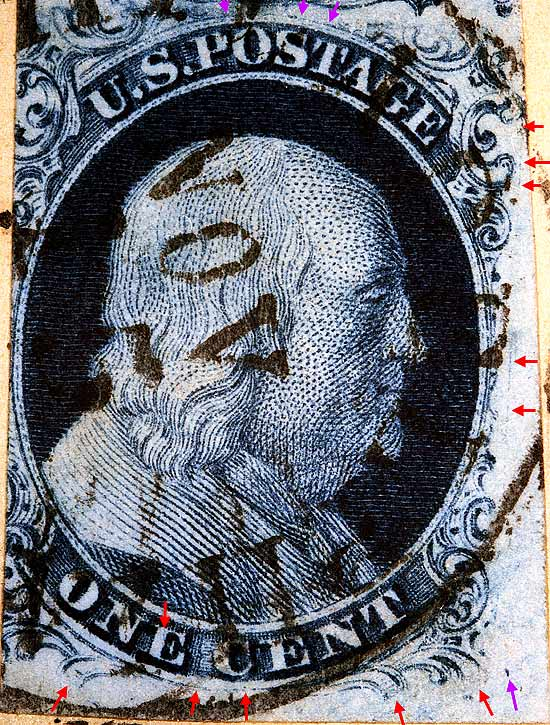
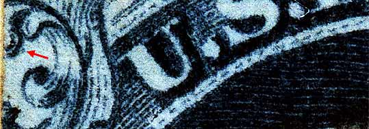
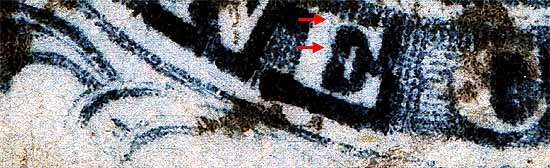
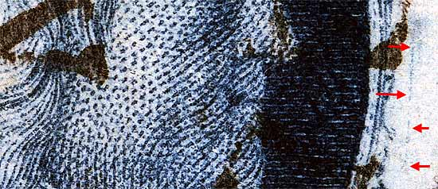
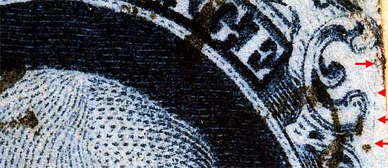
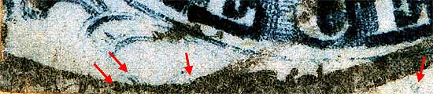

1¢ Franklin Issue of 1851-1857, PLATE 2 Pos 100R2, (Scott #7) |
| Scott #7 Relief A, Type II Issued both imperforate and perforated. Perforated copies are more scarce. MISPLACED "A" RELIEF Early impressions of 100R2 are type II, and late prints are Type IIIA with a break in the BOTTOM line. This stamp is Type II. The top line is never broken on this position. Ashbrook states that 100R2 was the only position from plate 2 that is a Type IIIa. But we now know that late impressions of several other positions can become Type IIIa's (but with the TOP line broken) because of weak or short transfers to the plate. These are 57R2, 58R2 and 95R2. The violet arrows also show the weak top curved line but it never breaks open. The reason the bottom line is weak is that this position was transferred with the "A" relief instead of the "B" relief used to transfer the rest of the bottom row of plate 2. The bottom of the B relief on the transfer roller was strong, and the bottom of the A (middle) relief was weaker. The transfer roller was over rocked and produced the 11th row effect which can be seen in Figure 5. below. |
|  |
| Figure 1. (Below) A small dot of color inside of Ornament "A."
 |
| Figure 2. (Below) A faint vertical line in the "E" of ONE.
 |
| Figure 3. (Below) A faint vertical scratch or scribe line which runs the length of the right margin on early impressions and slowly wears away as the plate wears.
 |
| Figure 4. (Below) A faint vertical scratch or scribe line which runs the length of the right margin on early impressions and slowly wears away as the plate wears.
 |
| Figure 5. (Below) Detail view of the "11th row effect" of over-rocking the relief roller. The two curved lines indicated to the left are the remains of Ornament U from the B relief. This is not shown in the Neinken plating diagrams but is a consistent variety. See 97R1L for another example of an "11th row effect".
 |
DISCLAIMER and COPYRIGHT INFORMATION: Thanks for visiting this site. I hope you learn something new as we are making new discoveries all the time. You, the visitor, have my permission to link to my pages and to share the INFORMATION with others. The images themselves fall under the fair use guidelines established by the United States Congress and Copyright law. Basically contact us before using. I also ask in return that you send me an e-mail if I have made a mistake, or have made some other technical blunder that in my rush to put these pages up would cause the visitor confusion. Please also visit my other website at www.slingshotvenus.com. and support the live music arts. While your there, be sure to purchase our music. There are not many philatelic rock stars around and we need all the help we can get. :-) I can be reached at: nerdman@ix.netcom.com Update 9/28/06 |